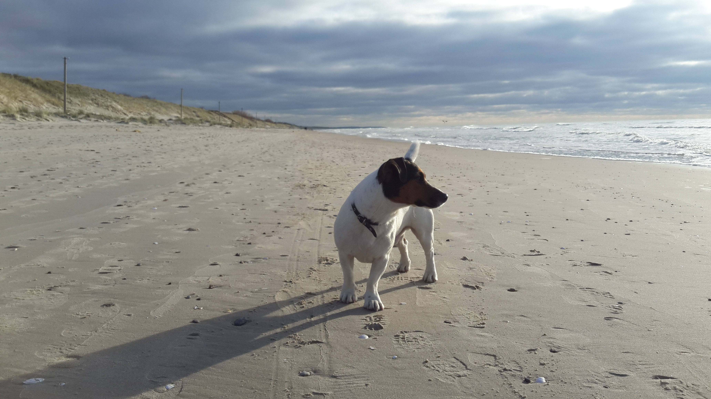
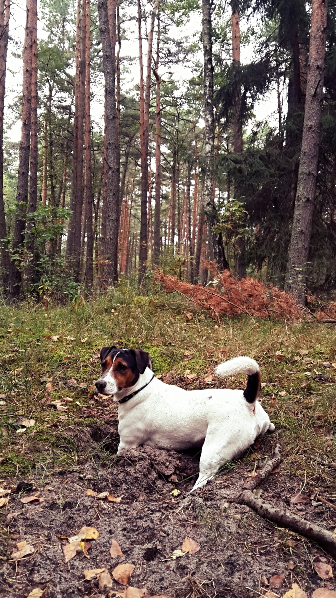

How to Get a New Bestie?
Home page
Before Getting a Dog
Adaptation
Pieces of Advice
Before getting a dog...
So, if you have unconditionally decided to make a new friend, despite all the doubts and possible difficulties in the future, I will try to introduce you to some important questions.
• First of all,
you should be morally prepared
yourself to dedicate your personal time (a lot of time!) to the raising and educating the dog. It is not so easy, because a small puppy is so similar to a child who is capricious and afraid of many things in the world. So, I would advise you to choose a time for acquiring a dog when you have a break at work/school and have a lot of free time and mental strength for a new member of the family.
• You should
keep a sufficient amount of money
not only for purchase and first necessities but alsofor all unexpected situations related to the dog. Start to redistribute your incomes!

• One of the issues that should be properly discussed is the
selection of a breed
. It is really important to find a breed that is appropriate especially for you. Read the characteristics of different breeds and interest in the personal stories of the owners. I suppose that most of you heard the quote that "dogs are similar to their owners" so try to choose the breed of dog which is similar to your own temperament. Do you want that your dog would be super active or passive? Curious or calm?
• The next major concern is finding an appropriate
veterinary clinic
where a doctor will observe your dog. Ask friends who have dogs about it or read recommendations on the internet. Don't forget about the importance of vaccinations and consultants with the veterinary about it. Be ready to spend money for this purpose!
• Also, find a
professional trainer
who will help you and a puppy to find a common language.
• You should prepare (or buy)
some of the things
which will be needed for a puppy when he or she will move to your house:
Diapers,napkins, and rags. The first time the puppy will be capricious and will piss everywhere, where he can go. At best, he will realize that after a few weeks he should only piss on diapers before it will happen you must be ready clean for him. It is irritating, but I convince that you will cope with it! Besides, I would advise hiding all the carpets at the home.
Two bowls (for food and water)
Hairbrush
Some toys
A special place where a puppy will live for the first time. You should fence off a safe area, or buy an aviary
A collar and leash according to the parameters of dog

If you think that you are coped with these points click here
"Adaptation"